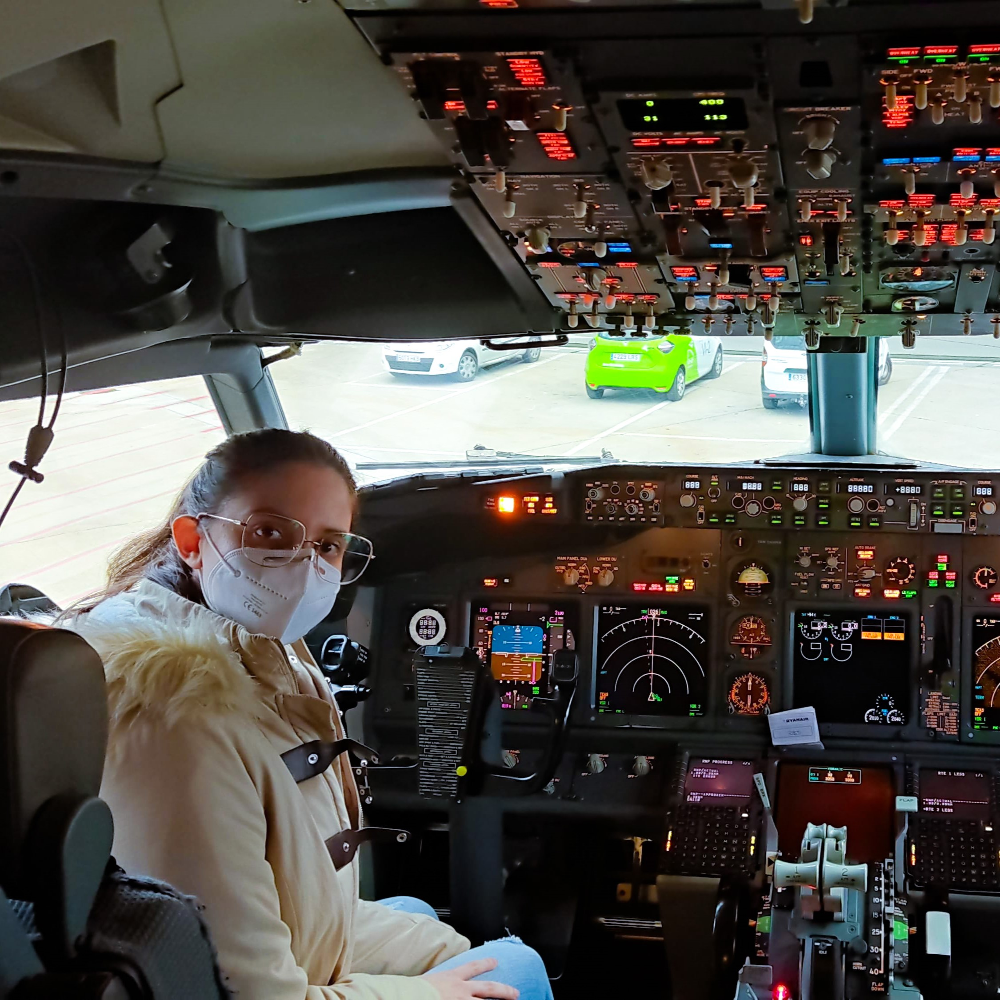
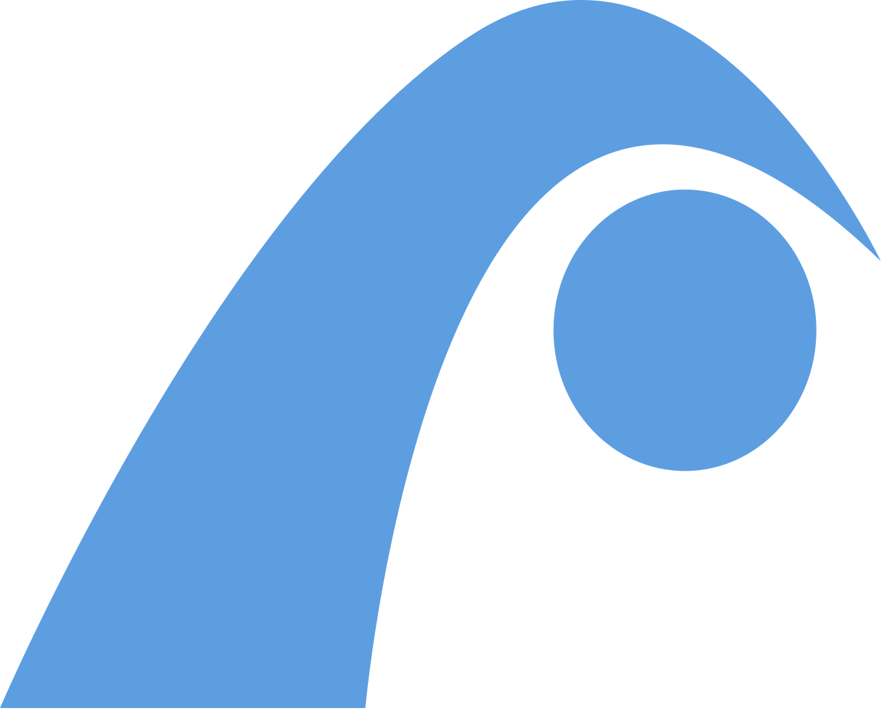
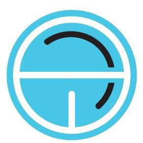

Patricia Serrano
Ayudo a empresas a alcanzar su máximo potencial mediante la automatización de procesos y la implantación de herramientas digitales.
Ayudo a empresas a alcanzar su máximo potencial mediante la automatización de procesos y la implantación de herramientas digitales.

¡Hola! Soy Patricia, y si estás por aquí posiblemente nos hayamos conocido ya en persona.
Me gusta pensar que soy una persona polivalente. Que he hecho muchas cosas diferentes a lo largo de mi vida, ¿sabes? He tocado el piano, he estudiado polaco e incluso me he sacado una ingeniería. Y lo más sorprendente es que todo me ha servido para ser el tipo de profesional que siempre he querido ser: cercana y enfocada en la satisfacción del cliente.
El objetivo de todo esto es no parar nunca, seguir aprendiendo y acercando la tecnología a los bolsillos más exigentes. Gracias a eso nos hemos conocido. Y créeme, todo lo que he aprendido lo uso en mi día a día. ¿Lo ves difícil de creer? Entonces sigue leyendo un poco más 😉
Haz clic en cada empresa para ver los detalles del rol y los logros que conseguí.


¿Sabes por qué la carrera que elegí me diferencia tanto (y para bien) de otros ingenieros?
De todas las cosas que se aprenden en ingeniería de la salud quizás la más importante es tener al usuario final como referencia durante todo el proceso. Da igual que lo llames usuario, cliente o paciente, suele ser una persona que no tiene tu misma formación y a la que es necesario escuchar y entender para lograr hacer algo que de verdad resuelva su necesidad.
Esta habilidad para traducir lo que el cliente dice en lo que quería decir es lo que convierte al ingeniero biomédico en un perfil tan valioso. Míralo de esta forma: como aprendemos que nuestro trabajo puede impactar directamente en la salud de las personas, aprendemos a trabajar con un margen de error cero.
Explora mi código y desarrollos tecnológicos a través de esta terminal interactiva.
No puedo decir que soy polivalente por el simple hecho de haber estudiado una ingeniería. Aquí tienes un listado de otros cursos, formaciones y certificaciones que tengo:
Lo que aprendí.
Lo que aprendí.
Disponible para proyectos de alta innovación y retos tecnológicos.
Enviar un correo